Birth: 10 July 1814 in Lingsdon, Somerset, England.
Death: 16 September 1880 in Redford Twp., Wayne, Michigan.
Burial: Redford Cemetery.
Married 1: Eliza Vigar on 11 April 1839 in Pitney, Somerset, England.
Children:
Anne Stuckey
George Stuckey
Susan Stuckey b: 1842 in Redford Twp., Wayne, MI
Vincent Stuckey b: 12 April 1843
Charles J Stuckey b: 7 March 1849
Charles Stuckey b: 1852
Married 2: Anna Higgins after 1866 in Probably Redford Twp., Wayne Co., Michigan. Note: First marriage was to Richard Miller, died in 1866 in Redford1, second to Samuel R. Stuckey.
Notes:
From Redford Township Its Heritage and its History printed in 1975 by Fred DesAutels:
The Stuckey Family went a long way to find Redford. Samuel Reynolds Stuckey (1814-1880) left Edinbourgh with six children for Melbourne, Australia, where they stayed about a year and returned to England. Then they made the seventy-day trip to the United States and settled on Twelfth Street, and returned again to England. George and Vincent married cousins in England. Anne stayed there; the others returned to America and bought a large parcel of land, from Telegraph to Five Points Avenue, north of Grand River. He established a cheese factory and also made the bricks to build his house at Beech and Grand River. He made enough bricks to build the Beech Road School. The house lasted 100 years and was sold for a new home for the Y.W.C.A. The school is still standing. The land was given with the provision that it would always be school ground, or it would revert to the Smith family. The son, Vincent (1848-1933), had a son named Raymond, who in December of 1907 married Charlotte Smith, a granddaughter of the old Justice William A. Smith. Raymond and Charlotte had four children -Lucille, Vincent, Don and Stuart. Charlotte was always a big help when I ran into difficulties in research. She always seemed to know the answers. She rode the interurban to school at Farmington. Raymond and Charlotte were faithful members most of their lifetime in the Baptist Church of Redford. After Raymond's death, she retired to the Baptist Home in the Whittier Towers on Detroit's east side, where one can watch the boats and the river traffic on the Detroit River.
[Information provided by T. Thompson]
1 Changed from Robert to Richard Miller. Correction by Debbie Holth
Birth: 1818 in England.
Death: 5 August 1873 in Redford, Michigan.
Burial: Redford Cemetery.
Married: Samuel Reynolds Stuckey on 11 April 1839 in Pitney, Somerset, England.
Children:
Anne Stuckey
George Stuckey
Susan Stuckey b: 1842 in Redford Twp., Wayne, MI
Vincent Stuckey b: 12 April 1843
Charles J Stuckey b: 7 March 1849
Charles Stuckey b: 1852
Birth: 12 April 1843 in England.
Death: 30 April 1928 in Redford, Michigan.
Burial: 3 May 1928 in Grand Lawn Cemetery, Wayne Co., Michigan.
Married: Harriet Watch on January 6, 1871.
Children:
Grace Stuckey b: 10 Jul 1872 in Redford, Michigan
Raymond A Stuckey b: 1875
Notes: Listed in 1880 Census. Only mention of Raymond's middle initial. Grace died 31 August 1873, hence is not listed on the census, and she is buried in Redford Cemetery.
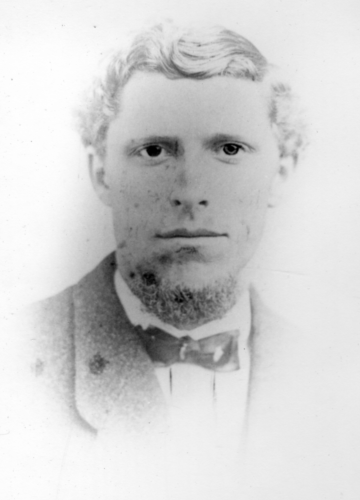
"Vincent Albert Stuckey, Age 24, Wedding Picture Jan. 6, 1871."
Birth: 1851 in Michigan.
Death: 1923
Married: Vincent Stuckey on January 6, 1871.
Children:
Grace Stuckey b: 10 Jul 1872 in Redford, Michigan
Raymond A Stuckey b: 1875
Notes: Harriet went by the nickname Hattie.
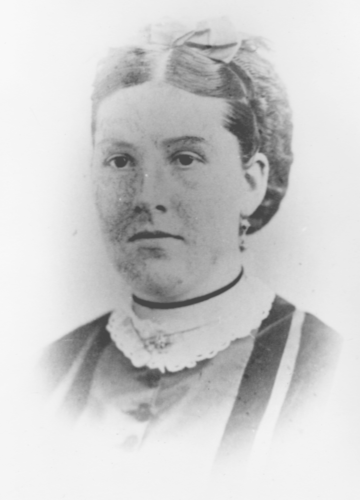
"Harriet Ann Watch Stuckey, Age 22. Wedding Puicture, Jan 6, 1871."
Birth: 2 Febuary 1811 in Somersetshire, England.
Death: 5 May 1883 in Redford, Michigan.
Burial: Redford Cemetary
Married: Ann Kirkland
Children:
Oliver Watch b: 1 Jan 1844
Harriet Watch b: 1851
Charlotte Watch
George Watch
Notes: Cattle Broker by trade, buying stock through the countryside and selling it at the Kings Cattle Yards which was between 1st and 2nd St. now 12th and Grand River in Detroit, Michigan. His household in the 1880 Census.
Birth: 20 November 1807 in Nottingham, England.
Death: 14 October 1883 in Redford, Michigan.
Burial: Redford Cemetary
Married: John Watch
Children:
Oliver Watch b: 1 Jan 1844
Harriet Watch b: 1851
Charlotte Watch
George Watch
Birth: 1875
Death: 1959
Married: Charlotte Smith on 18 December 1908.
Children:
Lucille Stuckey
Vincent Stuckey
Donald Stuckey
Stuart Nathaniel Stuckey
Notes: Has an elementary school named after him in the Redford Union School District.
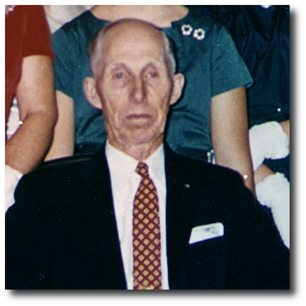
"Golden Wedding Anniversary dinner, December 21st, 1959."
Birth: 1885
Death:
Married: Raymond A Stuckey on 18 December 1908.
Children:
Lucille Stuckey
Vincent Stuckey
Donald Stuckey
Stuart Nathaniel Stuckey
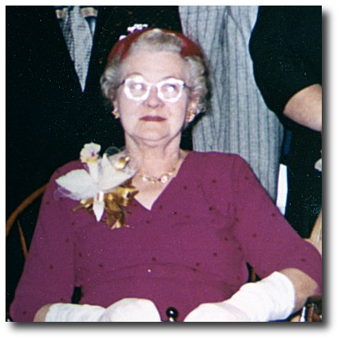
"Golden Wedding Anniversary dinner, December 21st, 1959."
Birth: 1861
Death: 1898 in Redford, Michigan
Married: Lucy Ann Gittins
Children:
Charlotte Smith b: 1885
Birth: 7 January 1860 in Shrewsbury, Shropshire, England
Death: 28 January 1935
Married: Nathaniel Smith
Children:
Charlotte Smith b: 1885
Notes: 1870 Census: Livonia Township, Wayne, MI, Sheet 1. Age 10. Attending school.
Birth: August 1815 in New York.
Death: Septmeber 1900
Burial: Redford Cemetery
Married 1: Almira Phillips
Children:
Mary Augusta Smith
Marshall Smith
Volney Smith
Nathaniel Smith b: 1861
Harriet Ann Smith b: 6 JAN 1843
Married 2: Mary E. between 1875 (Almira's death) and 1880 (Census).
Notes: 1880 Census. Wife listed as Mary E. Must be second wife because Almira died in 1875. Here is the 1870 Census with that household. Some marriages that William preformed as Justice of the Peace.
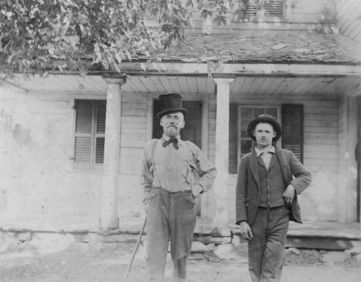
"Papa and Nate" written on the back. Papa being William Smith and Nate being his son Nathaniel Smith.
Birth: January 1820 in New York.
Death: 13 March 1875
Burial: Redford Cemetery
Married: William A Smith
Children:
Mary Augusta Smith
Marshall Smith
Volney Smith
Nathaniel Smith b: 1861
Harriet Ann Smith b: 6 JAN 1843
Birth: 1 January 1814 in Shrewsbury (Fords Heath), Shropshire, England
Death: 12 September 1876 in Redford, Michigan.
Burial: Redford Cemetery
Married 1: Margaret Jones on 17 November 1844.
Married 2: Charlotte Green on 4 Febuary 1852.
Children:
George Isaac Gittins b: 7 Feb 1853 in Shrewbury, Shropshire, England.
Sarah Jane Gittins b: 7 Feb 1853 in Shrewbury, Shropshire, England.
Thomas Green Gittins b: 26 Mar 1856 in Shrewbury, Shropshire, England.
Charlotte Elizabeth Gittins b: 13 Jul 1858 in Shrewbury, Shropshire, England.
Lucy Ann Gittins b: 7 Jan 1860 in Shrewbury, Shropshire, England.
Johns Gittins b: 25 Feb 1862 in Shrewbury, Shropshire, England.
Rose Amelia Gittins b: 26 Dec 1863 in Livonia, Michigan.
Notes: "arrived from England 1862" on gravestone.
Came to the United States between March, 1862 and December, 1863.
From a posting by Ray Gittins and Tom Gittins: George Gittins brought his family to America in 1863, sailing from Liverpool on the vessel "Edinborough" arriving Port of New York, April 15, 1863, proceeding to Detriot, MI.
1870 Census: Livonia Township, Wayne, MI, Sheet 1. Age 55. Farmer
Birth: 11 Febuary 1823 in Guilsboro, Northampton, England.
Death: 5 December 1904 in Redford, Michigan.
Burial: Redford Cemetery
Married: George Isaac Gittins on 4 Febuary 1852.
Children:
George Isaac Gittins b: 7 Feb 1853 in Shrewbury, Shropshire, England.
Sarah Jane Gittins b: 7 Feb 1853 in Shrewbury, Shropshire, England.
Thomas Green Gittins b: 26 Mar 1856 in Shrewbury, Shropshire, England.
Charlotte Elizabeth Gittins b: 13 Jul 1858 in Shrewbury, Shropshire, England.
Lucy Ann Gittins b: 7 Jan 1860 in Shrewbury, Shropshire, England.
Johns Gittins b: 25 Feb 1862 in Shrewbury, Shropshire, England.
Rose Amelia Gittins b: 26 Dec 1863 in Livonia, Michigan.
Birth: 1783 in Shrewsbury, Shropshire, England.
Death: 1850
Married: Catherine Poole on 30 December 1811 in Atcham, Shropshire, England.
Children:
Henry Gittins b: 1812
George Isaac Gittins b: 1 January 1814 in Shrewbury, Shropshire, England.
Birth: 20 April 1789 in Shrewsbury, Shropshire, England.
Death: 1861
Married: Isaac Gittins on 30 December 1811 in Atcham, Shropshire, England.
Children:
Henry Gittins b: 1812
George Isaac Gittins b: 1 January 1814 in Shrewbury, Shropshire, England.
Birth: 1752 in Pontesbury, Shropshire, England.
Death:
Married: Elizabeth Jones
Children:
Sarah Gittins b: Abt 1778 in Shropshire, England.
Abraham Gittins b: Abt 1780 in Shropshire, England.
Isaac Gittins b: 1783 in Shrewsbury, Shropshire, England.
Birth: 1756 in Pontesbury, Shropshire, England
Death:
Married: John Gittins
Children:
Sarah Gittins b: Abt 1778 in Shropshire, England.
Abraham Gittins b: Abt 1780 in Shropshire, England.
Isaac Gittins b: 1783 in Shrewsbury, Shropshire, England.
Married: Mary
Children:
Catherine Poole b: 20 April 1789 in Shrewsbury, Shropshire, England.
Married: Thomas Poole
Children:
Catherine Poole b: 20 April 1789 in Shrewsbury, Shropshire, England.
Birth: 1792
Death: 1862
Married: Jane
Children:
Ann Green b: 1814 in Guilsboro, Northampton, England.
George Green b: 1816 in Guilsboro, Northampton, England.
Phoebe Ann Green b: 1818 in Guilsboro, Northampton, England.
John Green b: 1821 in Guilsboro, Northampton, England.
Charlotte Green b: 11 Feb 1823 in Guilsboro, Northampton, England.
Sarah Green b: 1825 in Guilsboro, Northampton, England.
Elizabeth Green b: 1828 in Guilsboro, Northampton, England.
Birth: 1789
Death: 1856
Married: Thomas Green
Children:
Ann Green b: 1814 in Guilsboro, Northampton, England.
George Green b: 1816 in Guilsboro, Northampton, England.
Phoebe Ann Green b: 1818 in Guilsboro, Northampton, England.
John Green b: 1821 in Guilsboro, Northampton, England.
Charlotte Green b: 11 Feb 1823 in Guilsboro, Northampton, England.
Sarah Green b: 1825 in Guilsboro, Northampton, England.
Elizabeth Green b: 1828 in Guilsboro, Northampton, England.
Birth: 20 December 1916 in Redford, Michigan.
Death: 13 September 2001 in Three Rivers, Michigan.
Burial: Cremated
Married: Gertrude Raye Dickerson
Children:
Steven Ray Stuckey b: 4 Dec 1944 in Detriot, Michigan.
Stuart Dick Stuckey
Charles Jon Stuckey
Birth: 23 November 1918 in Detroit, Michigan.
Death: 9 September 1993 in Three Rivers, Michigan.
Burial: Cremated
Married: Stuart Nathaniel Stuckey
Children:
Steven Ray Stuckey b: 4 Dec 1944 in Detriot, Michigan.
Stuart Dick Stuckey
Charles Jon Stuckey
Note: There's always been confusion about when "Gretch" was actually born. But her mother writes in her book as it being "November the 23rd, 1918, at Providence Hospital on West Grand Boulevard, Detroit, Michigan." Social Security Death Index lists it as November 24.
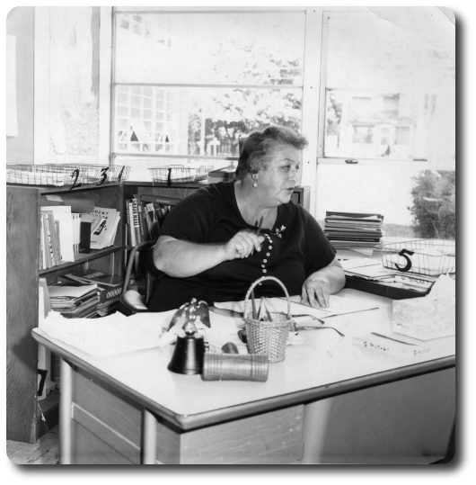
Birth: 15 October 1890 in Grand Rapids, Michigan.
Death: 23 August 1948
Burial: Evergreen Cemetery, Malcolm County, Michigan.
Married: Alice Gertrude Cassady on 18 December 1912 in Mt. Pleasant, Michigan.
Children:
Gertrude Raye Dickerson b: 24 Nov 1918
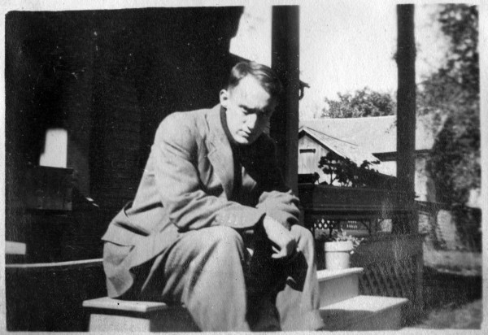
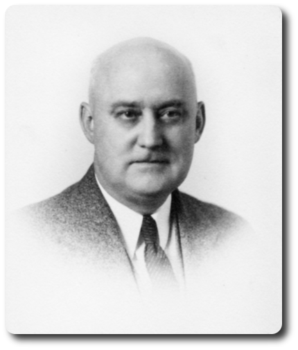
Notes: Attended Central Michigan Normal School, now Central Michigan University. Junior Life Class President. Football letter winner 1910-11. Basketball letter winner 1910-12. I found the cemetery on Malcolm County Cemeteries.
Birth: 29 January 1893 in Mt. Pleasant, Michigan.
Death: 26 August 1982 in Three Rivers, Michigan.
Burial: Lot 367, Section 23, Grand Lawn Cemetery, Wayne County, Michigan.
Married: Orlo Ray Dickerson on 18 December 1912 in Mt. Pleasant, Michigan.
Children:
Gertrude Raye Dickerson b: 24 Nov 1918
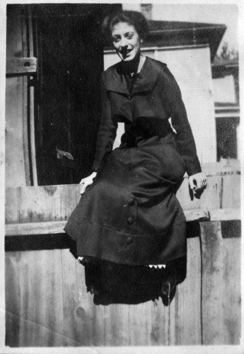
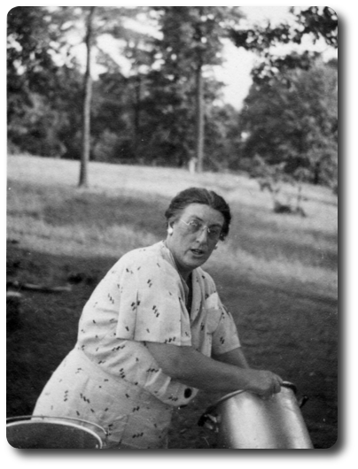
Notes: Graduated Mt. Pleasant High School 1910. Also attended Central Michigan Normal School. In her book, she makes no reference to her first name Alice, and seems to go by Gertrude.
Birth: 1850 in Nunday, New York.
Death: 1942
Married: Alice Harnden on 9 August 1874 in Bay County, Michigan.
Children:
Ed. Cassady
Addie Cassady
Clara "Teddy" Cassady
Harvey Cassady
Ida Mae Cassady
Alice Gertrude Cassady b: 29 Jan 1893
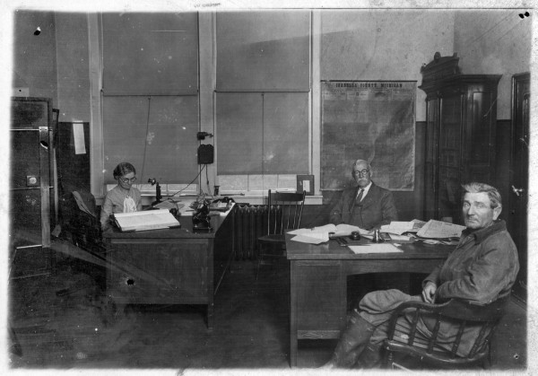
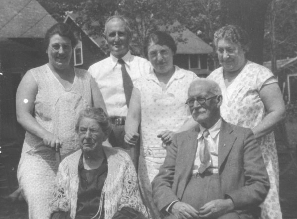
Back Row: Alice Gertrude (Cassady) Dickerson, Ed Dickerson, Ida Mae (Cassady) Garvey, Addie Cassady.
Front Row: Alice (Harnden) Cassady, Charles Cassady.
Notes: All the children's names are from Gertrude Cassady's book. I'm not sure about the order of children except the Ed. is the oldest and Ida Mae is the next youngest to Gertrude
Birth: 1855 in Boston, Massachusettes.
Death: 1932
Married: Charles Cassady on 9 August 1874 in Bay County, Michigan.
Children:
Ed. Cassady
Addie Cassady
Clara "Teddy" Cassady
Harvey Cassady
Ida Mae Cassady
Alice Gertrude Cassady b: 29 Jan 1893.
Notes: All the children's names are from Gertrude Cassady's book. I'm not sure about the order of children except the Ed. is the oldest and Ida Mae is the next youngest to Gertrude
Birth: in New Hampshire
Married: Clara Newell Brown
Children:
Will Harnden
Albert Harnden
Alice Harnden b: 1855
Birth: 1852 in Boston, Massechusettes.
Married: William Harnden
Children:
Will Harnden
Albert Harnden
Alice Harnden b: 1855
Birth: in New York
Married: Rose Ann Slaight
Children:
Charles Cassady b: 1850
Birth: in New York
Married: Ralph Cassady
Children:
Charles Cassady b: 1850
Married: Sears
Children:
Ralph Cassady
Married: John Cassady
Children:
Ralph Cassady
Notes: First name may possibly be Hannah.
Birth: 15 March 1856 in Michigan.
Death: 18 January 1920 in Kent County, Michigan.
Married: Mary A Cramer on 2 Dec 1879 in Reed City, Osceola, Michigan.
Children:
Joseph Lindsley Dickerson b. 21 Feburary 1881.
Pearl May Dickerson b. 30 May 1882.
Paul Virgil Dickerson b: 13 May 1884 in Lake Co, MI
Corwin Ora Dickerson b: 29 Apr 1887 in Kent Co, MI
Orlo Ray Dickerson b: 15 Oct 1890 in Grand Rapids, MI
Shirley Ulie Dickerson b: 22 Mar 1894 in Grand Rapids, MI
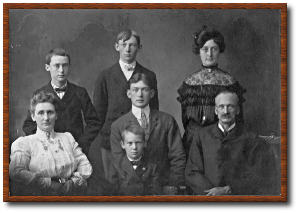
I think this is a pciture of the Joseph L Dickerson and his family.
Back row: Orlo, Corwin, and Pearl. Front row: Mary, Paul, and Joseph. In the front is Shirley.
Birth: 15 Febuary 1862 in Indiana.
Death: 16 April 1930 in Kent County, Michigan.
Married: Joseph Lindsley Dickerson on 2 Dec 1879 in Reed City, Osceola, Michigan.
Children:
Joseph Lindsley Dickerson b. 21 Feburary 1881. d. 21 Feburary 1881.
Pearl May Dickerson b. 30 May 1882.
Paul Virgil Dickerson b: 13 May 1884 in Lake Co, MI
Corwin Ora Dickerson b: 29 Apr 1887 in Kent Co, MI
Orlo Ray Dickerson b: 15 Oct 1890 in Grand Rapids, MI
Shirley Ulie Dickerson b: 22 Mar 1894 in Grand Rapids, MI
Notes: Found a few loose pages of "Family Records" with all the names and birthdays, presents by Mary to J.L. Dickerson. She writes her last name with a C not a K.
Birth: USA
Married: Van Dusen
Children:
Mary A Cramer b: 15 Feb 1863 in Indiana
Birth: in Indiana.
Married: Austin Cramer
Children:
Mary A Cramer b: 15 Feb 1863 in Indiana
Birth: 10 October 1810 in Pennsylvania.
Death: 10 Febuary 1886 in Michigan.
Married: Joanna Corwin on 10 October 1835
Children:
James Dickerson
Thomas J Dickerson b: 1838
Lewis P Dickerson b: 8 Jan 1840 in Michigan.
Ruth E Dickerson b: 1842
William Dickerson b: 1844
Alaster Dickerson b: 1846
Henry Lee Dickerson b: Dec 1848
Esther Dickerson b: 1849
Sarah Dickerson
Nancy Dickerson b: 1854
Joseph Lindsley Dickerson b: 15 Mar 1856 in Michigan.
Fred S Dickerson b: Jan 1858
Birth: 1813 in New York.
Married: Joseph Lindsley Dickerson on 10 October 1835.
Children:
James Dickerson
Thomas J Dickerson b: 1838
Lewis P Dickerson b: 8 Jan 1840 in Michigan.
Ruth E Dickerson b: 1842
William Dickerson b: 1844
Alaster Dickerson b: 1846
Henry Lee Dickerson b: Dec 1848
Esther Dickerson b: 1849
Sarah Dickerson
Nancy Dickerson b: 1854
Joseph Lindsley Dickerson b: 15 Mar 1856 in Michigan.
Fred S Dickerson b: Jan 1858
Birth: June 1783 in New Jersey
Death: 5 March 1842
Burial: Newburgh Cememtery, Livonia, Wayne Co, Michigan.
Married: Ruth Johnson on 29 December 1805.
Children:
Nancy Stiles Dickerson b: 1 Oct 1806
Thomas Johnson Dickerson b: 10 Aug 1808
Joseph Lindsley Dickerson b: 10 Oct 1810 in PA
Phebe Grace Dickerson b: 26 Jun 1813 in PA
John Wilmer Dickerson b: 6 Mar 1815
Gabriel Davis Dickerson b: 6 Mar 1817 in PA
Rhoda Ann Dickerson b: 1 May 1819 in PA
Mahlon Silas Dickerson b: 19 Feb 1821 in PA
William Laskey Dickerson b: 17 Dec 1822 in PA
Daniel Lee Dickerson b: 1824
Jesse Jackson Dickerson b: 1825
Ruth Eliza Dickerson b: 1827
Morris Richmond Dickerson b: 1828
Notes:
Census: 1820 Palmyra, Pike Co, PA
age 26-45
listed as Thomas Dickerson
males 1 25-45, 1 10-16, 3 under 10
females 1 26-45, 1 10-16, 2 under 10
Census: 1830 Palmyra, Wayne Co, NY
age 40-50
listed as Thomas Dickinson
males 1 40-50, 1 20-30, 2 15-20, 1 10-15, 2 5-10
females 1 40-50, 1 15-20, 1 10-15
Census: 1840 Nankin, Wayne Co, MI
age 50-60
listed as Thomas Dickinson
males 1 50-60, 1 20-30
females 1 50-60, 1 20-30
Land Patent: 10 Feb 1832 Nankin, Wayne Co, MI
Patentee:Thomas Dickerson
Of:Wayne Co, NY
Acres:160
Issue Date:2/10/1832
Aliquot Parts:NE
Sec / Block10/
Township:2-S
Range:9-E
State:MI
Counties:Wayne
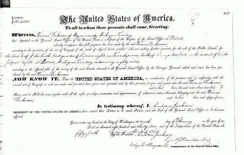
{kind=link}
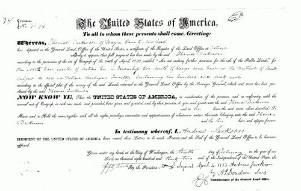
{kind=link}
Nankin Pioneer List Miscellaneous May 1872 Nankin, Wayne Co, MI
Shown as an early settler of Nankin township who is deceased by May 1872, in a biographical sketch of Gen. Lawson Van Akin.
listed as Thomas Dickinson
Pioneer & Historical Collections, VOL. XIV, Pages 474 - 477, Recollections of Nankin
Thomas Dickerson was a native of New Jersey. From there he went to Pennsylvania, thence to Palmyra, N.Y. He joined our pioneer circle in 1831. He bought of the government the northeast 1/4 of section 10, June 2, 1831, and immediately commenced building a house thereon. He brought his family before locating his land. While the house was building he found accommodations for his family in the east wing of Marcus Swift's house. His first house was built for temporary use. It was placed about 40 rods west of the east line of the farm on the north bank of the brook. After two or three years he built a cheap framed house a few rods west of it. He was a blacksmith, and the first of that craft among us. He built a log shop near his house, burned a coal pit to procure charcoal, and from his shop could be heard the clink of his hammer, as he did sundry jobs for his neighbors for a series of years. In 1836 he built a large frame barn near his house which still stands, though houses and ship have long since gone to decay.
When Mr. Dickerson came among us, he left in Pennsylvania, three of his oldest children. Those he brought with him were Phebe G., John and Davis, all grown to full stature, Rhoda Ann, a girl of 12 years, Mahlon and William . Phebe married Elronzo Thomas, son of Alanson Thomas of Dearborn, in 1832 or 3. He owned and occupied a farm on section 13. She reared a family of children, and died many years ago. The family have all passed out of my knowledge. John Dickerson died unmarried in 1840. Davis married Miss Amanda Dean, daughter of David S. Dean, then of Nankin, and removed to Kent county, and died within the present years. Rhoda Ann married David Hicks and has always resided on a farm on section 13. She has reared a family of children. In recent years an accident to her hip joint will compel her to walk, the rest of her days, on crutches.
Mahlon married Miss Isabella Felton, reared a family of children and died in Montcalm county, in 1888.
William L., the youngest son, learned the wagon maker's trade and worked at it may years. By great industry and economy he succeeded in purchasing of the heirs, titles to the greater part of his father's farm, and has since resided thereon. In 1853 he married Miss Olive Litchfield of Dexter, who has shared his fortune since that time. They have also reared a family of children.
Joseph L. Dickerson, one of the children left in Pennsylvania, followed his father, arriving a year or two later, and commenced business as a blacksmith in Perrinsville; after a few years he went to Kent county, where he died in recent years.
Thos. Dickerson, the subject of this sketch, was an active and leading member of the M. E. church, and a class leader from the time of his coming among us till the great secession of 1841. He did not see his way clear to go with the majority, but gave the hand of Christian fellowship to those who did go. He died in the summer of 1842, aged 58 years. The family has always sustained a reputation for honesty, industry and respectability.
Birth: 3 April 1783 in New Jersey
Death: 12 January 1850 in Wayne Co, Michigan.
Burial: New Burgh Cemetery, Nankin Twp, Wayne County, Michigan.
Married: Thomas Dickerson on 29 December 1805.
Children:
Nancy Stiles Dickerson b: 1 Oct 1806
Thomas Johnson Dickerson b: 10 Aug 1808
Joseph Lindsley Dickerson b: 10 Oct 1810 in PA
Phebe Grace Dickerson b: 26 Jun 1813 in PA
John Wilmer Dickerson b: 6 Mar 1815
Gabriel Davis Dickerson b: 6 Mar 1817 in PA
Rhoda Ann Dickerson b: 1 May 1819 in PA
Mahlon Silas Dickerson b: 19 Feb 1821 in PA
William Laskey Dickerson b: 17 Dec 1822 in PA
Daniel Lee Dickerson b: 1824
Jesse Jackson Dickerson b: 1825
Ruth Eliza Dickerson b: 1827
Morris Richmond Dickerson b: 1828
Birth: 17 Febuary 1755 in Morris County, New Jersey.
Christening: 21 April 1755 in Presbyterian Church, Morristown, New Jersey.
Death: 15 May 1828 in Madison, Jefferson, Indiana.
Burial: Marling Cemetery, Hanover, Jefferson, Indiana.
Married 1: Grace Lindsley on 15 August 1780 in the Presbyterian Chrurch, Morristown, New Jersey.
Children:
Joseph Lindsley Dickerson b: 7 Oct 1781 in Morristown, NJ
Thomas Dickerson b: June 1783 in New Jersey
Jesse Dickerson b: 9 Jan 1790 in Jefferson Co, IN
John Dickerson b: 3 Mar 1792
Married 2: Eliza Coulson
Children:
Lambert Wilmer Dickerson b: 17 Oct 1793 in near Morristown, NJ
Esther Dickerson b: 17 Nov 1798
Silas Dickerson b: 21 Jun 1802
Birth: 26 Febuary 1763 in Morristown, Morris County, New Jersey.
Christening: 1 May 1763 in Morristown, New Jersey.
Death: 13 Mar 1836 in Madison, Jefferson, Indiana.
Burial: Marling Cemetery, Hanover, Jefferson, Indiana.
Married: John Dickeron on 15 August 1780 in the Presbyterian Chruch, Morristown, New Jersey.
Children:
Joseph Lindsley Dickerson b: 7 Oct 1781 in Morristown, NJ
Thomas Dickerson b: June 1783 in New Jersey
Jesse Dickerson b: 9 Jan 1790 in Jefferson Co, IN
John Dickerson b: 3 Mar 1792
Birth: 7 June 1736 in Morristown, Morris, New Jersey
Death: 8 October 1822 in Morris, New Jersey
Burial: First Presbyterian Church, Morristown, Morris, New Jersey.
Married 1: Anne Lum on 12 March 1761.
Children:
Bethia Lindsley b: 23 Oct 1761 in Morristown, Morris, New Jersey.
Grace Lindsley b: 26 Feb 1763 in Morristown, Morris, New Jersey.
Susanna Lindsley b: 12 Sep 1764 in Morristown, Morris, New Jersey.
Squire Lindsley b: Mar 1768 in Morristown, Morris, New Jersey.
Jemima Lindsley b: 15 Nov 1769 in Morristown, Morris, New Jersey.
Anna Lindsley b: 15 May 1774 in Morristown, Morris, New Jersey.
Nancy Lindsley b: 15 May 1774 in Morristown, Morris, New Jersey.
Married 2: Mary Gardner on 1 October 1781.
Children:
Phebe Lindsley b: 1782 in Morristown, Morris, New Jersey.
Joseph M Lindsley b: 13 Aug 1783 in Morristown, Morris, New Jersey.
Mathew G Lindsley b: 27 Jan 1787 in Morristown, Morris, New Jersey.
Mary Lindsley b: 20 Feb 1789 in Morristown, Morris, New Jersey.
Ira Lindsley b: 21 Apr 1785 in Morristown, Morris, New Jersey.
Birth: 1742 in Whippany, Morris, New Jersey.
Death: 8 December 1779 in Morristown, Morris, New Jersey.
Burial: First Presbyterian Church, Morristown, Morris, New Jersey.
Married 2: Joseph Lindsley on on 12 March 1761.
Children:
Bethia Lindsley b: 23 Oct 1761 in Morristown, Morris, New Jersey.
Grace Lindsley b: 26 Feb 1763 in Morristown, Morris, New Jersey.
Susanna Lindsley b: 12 Sep 1764 in Morristown, Morris, New Jersey.
Squire Lindsley b: Mar 1768 in Morristown, Morris, New Jersey.
Jemima Lindsley b: 15 Nov 1769 in Morristown, Morris, New Jersey.
Anna Lindsley b: 15 May 1774 in Morristown, Morris, New Jersey.
Nancy Lindsley b: 15 May 1774 in Morristown, Morris, New Jersey.
Notes: First name is Ann or some variation, Anne or Anna. Her last name might be spelled Lumm.
Birth: 1700 in Newark, Essex County, New Jersey.
Death: 14 August 1777 in Morristown, Morris County, New Jersey.
Burial: First Presbyterian Church, Morristown, Morris, New Jersey.
Married: Grace Kitchell
Children:
Zenas Lindsley b: 1738 in Morristown, Morris, New Jersey.
Elizabeth Lindsley b: 1740 in Morristown, Morris, New Jersey.
Susanna Lindsley b: 1742 in Morristown, Morris, New Jersey.
Moses Lindsley b: 1734 in Morristown, Morris, New Jersey.
Joseph Lindsley b: 7 Jun 1736 in Morristown, Morris, New Jersey.
Notes: "Elected an Elder in 1754 and Deacon in 1765." From the Presbyerian Church website.
Birth: 10 March 1708
Death: 12 September 1777
Burial: First Presbyterian Church, Morristown, Morris, New Jersey.
Married: Daniel Linsley
Children:
Zenas Lindsley b: 1738 in Morristown, Morris, New Jersey.
Elizabeth Lindsley b: 1740 in Morristown, Morris, New Jersey.
Susanna Lindsley b: 1742 in Morristown, Morris, New Jersey.
Moses Lindsley b: 1734 in Morristown, Morris, New Jersey.
Joseph Lindsley b: 7 Jun 1736 in Morristown, Morris, New Jersey.
Birth: 1679 in Newark, Essex, New Jersey.
Death: 2 Dec 1741 Whippany, Morris, New Jersey.
Married: Sarah Bruen in 1700 in Hanover, Morris, New Jersey.
Children:
Samuel Kitchell b: 6 Jan 1705 in Newark, Essex, New Jersey.
Grace Kitchell b: 10 Mar 1708 in Newark, Essex, New Jersey.
Joseph Kitchell b: 25 Jan 1712 in Newark, Essex, New Jersey.
John Kitchell b: 2 Feb 1714 in Hanover, Morris, New Jersey.
Mary Allis Kitchell b: Jul 1715 in Hanover, Morris, New Jersey.
Abigail Kitchell b: Nov 1717 in Hanover, Morris, New Jersey.
David Kitchell b: 7 Nov 1723 in Hanover, Morris, New Jersey.
Birth: 1679 in Newark, Essex, Nw Jersey.
Death: 30 April 1745 in Whippany, Morris, New Jersey.
Burial: Old Whippany Cemetery, Whippany, New Jersey.
Married: Abraham Kitchell in 1700 in Hanover, Morris, New Jersey.
Children:
Samuel Kitchell b: 6 Jan 1705 in Newark, Essex, New Jersey.
Grace Kitchell b: 10 Mar 1708 in Newark, Essex, New Jersey.
Joseph Kitchell b: 25 Jan 1712 in Newark, Essex, New Jersey.
John Kitchell b: 2 Feb 1714 in Hanover, Morris, New Jersey.
Mary Allis Kitchell b: Jul 1715 in Hanover, Morris, New Jersey.
Abigail Kitchell b: Nov 1717 in Hanover, Morris, New Jersey.
David Kitchell b: 7 Nov 1723 in Hanover, Morris, New Jersey.
Birth: 1668 in Newark, Essex, New Jersey.
Death: 27 October 1749 in Morristown, Morris, New Jersey.
Married: Elizabeth Freeman in 1725.
Children:
Daniel Lindsley b. 1700 in Newark, Essex, New Jersey.
Birth:
Death:
Married: John Lindsley in 1725.
Children:
Daniel Lindsley b. 1700 in Newark, Essex, New Jersey.
Birth: between 1600 and 1624 in Althorpe, Lincolnshire, England.
Death: 1704 in Elizabeth, Newark, Essex, New Jersey
Married: Susanna Culpepper on 24 June 1655 in Branford, New Haven, Connecticut.
Children:
John Lindsley b. 1668 in Newark, Essex, New Jersey.
Notes: Emigration in1638 from England to New Haven Colony, then moved to Brandford.
Birth: between 1627 and 1634 in England.
Death: 2 Feb 1698/1699 in Elizabeth, Essex, New Jersey.
Married: Francis Lindsley on 24 June 1655 in Branford, New Haven, Connecticut.
Children:
John Lindsley b. 1668 in Newark, Essex, New Jersey.
Birth: 20 October 1725 in Southold, Long Island, Suffolk, New York.
Death: 10 May 1780 in Morristown, Morris, New Jersey.
Burial: 12 May 1780.
Married 1: Ruth Coe on 20 October 1745 in Presbyterian Church, Morristown, Morris, New Jersey.
Children:
John Dickerson b. 17 Febuary 1755.
Esther Dickerson b. 22 March 1757 in Morristown, Morris, New Jersey.
Married 2: Sarah O'Harra Armstrong
Notes:
Captain of the 2nd Co, 3rd Regt. of the NJ Brigade of the Revolutionary Army.
Death of Inflammatory-fever http://fairchilds2.tripod.com/morristown_bill_of_mortality.html
?Second wife Sarah? Sarah, widow of Capt. Peter DICKERSON, 69, Fever, 18 Aug http://fairchilds2.tripod.com/morristown_bill_of_mortality.html
Birth: 21 September 1728 in Hanover, Morris, New Jersey.
Death: 10 Febuary 1763 in Morristown, Morris, New Jersey.
Married: Peter Dickerson on 20 October 1745 in Presbyterian Church, Morristown, Morris, New Jersey.
Children:
John Dickerson b. 17 Febuary 1755.
Esther Dickerson b. 22 March 1757 in Morristown, Morris, New Jersey.
Birth: 11 December 1704 in Jamacia, Queens, New York.
Death: 22 November 1760.
Married 1: Esther in 1725 in Hanover, Morris, New Jersey.
Children:
Ruth Coe b. 21 September 1728 in Hanover, Morris, New Jersey.
Rachel Coe b. 28 May 1731 in Hanover, Morris, New Jersey.
Joseph Coe b. 30 September 1738 in Hanover, Morris, New Jersey.
Birth: 11 December 1704.
Death: 24 June 1760 in Morristown, Morris, New Jersey.
Married: Joseph Coe, Jr. in 1725 in Hanover, Morris, New Jersey.
Children:
Ruth Coe b. 21 September 1728 in Hanover, Morris, New Jersey.
Rachel Coe b. 28 May 1731 in Hanover, Morris, New Jersey.
Joseph Coe b. 30 September 1738 in Hanover, Morris, New Jersey.
Birth: 1686-1698 in Southold, Suffolk, Long Island, New York.
Death: 12 September 1725 in Southold, Suffolk, Long Island, New York.
Married: Abigail Reeve on 13 January 1715.
Children:
Abigail Dickerson b. 1715 in Southold, Suffolk, Long Island, New York.
Thomas Dickerson b. 1717 in Southold, Suffolk, Long Island, New York.
Daniel Dickerson b. 1718 in Southold, Suffolk, Long Island, New York.
Elizabeth Dickerson b. 1722 in Southold, Suffolk, Long Island, New York.
(Daughter) Dickerson b. 1724 d. 30 August 1724 in Southold, Suffolk, Long Island, New York..
Peter Dickerson b. 1725 in Southold, Suffolk, Long Island, New York.
Joshua Dickerson b. 1718-1725 in Southold, Suffolk, Long Island, New York.
Birth: 1689 in Southold, Suffolk, Long Island, New York.
Death: 1758 in Southold, Suffolk, Long Island, New York
Married: Thomas Dickerson on 13 January 1715.
Children:
Abigail Dickerson b. 1715 in Southold, Suffolk, Long Island, New York.
Thomas Dickerson b. 1717 in Southold, Suffolk, Long Island, New York.
Daniel Dickerson b. 1718 in Southold, Suffolk, Long Island, New York.
Elizabeth Dickerson b. 1722 in Southold, Suffolk, Long Island, New York.
(Daughter) Dickerson b. 1724 d. 30 August 1724 in Southold, Suffolk, Long Island, New York..
Peter Dickerson b. 1725 in Southold, Suffolk, Long Island, New York.
Joshua Dickerson b. 1718-1725 in Southold, Suffolk, Long Island, New York.
Birth: 1659 in Southold, Suffolk, New York.
Death: 15 December 1712 in Southold, Suffolk, New York.
Married: Hannah Brown
Children:
Abigail Reeves b. 1676 in Southold, Suffolk, New York.
Joseph Reeves b. 1678 in Southold, Suffolk, New York.
John Reeves b. 1680 in Southold, Suffolk, New York.
Walter Reeves b. 1683 in Southold, Suffolk, New York.
Hannah Reeves b. 1685 in Southold, Suffolk, New York.
Samuel Reeves b. 1687 in Southold, Suffolk, New York.
Bethiah Reeves b. 1690 in Southold, Suffolk, New York.
Elisha Reeves b. 1693 in Southold, Suffolk, New York.
Jonathan Reeves b. 1695 in Southold, Suffolk, New York.
Martha Reeves b. 1701 in Southold, Suffolk, New York.
Birth: 25 July 1877
Death: 1 January 1957
Burial: Michigan Memorial Cemetary, Flat Rock, Michigan.
Married: Anna Marie Frey
Children:
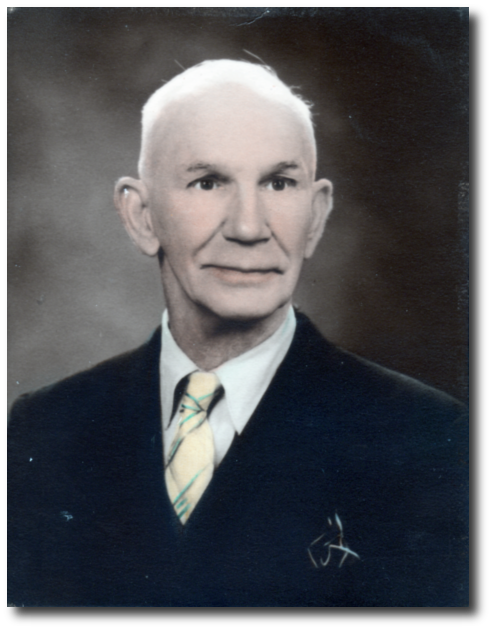
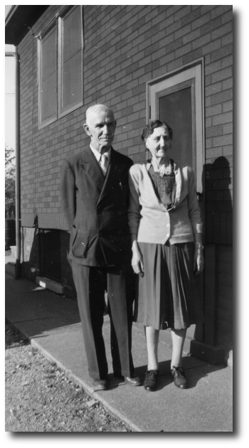
Birth: 23 December 1875
Death: 26 October 1953
Burial: Michigan Memorial Cemetary, Flat Rock, Michigan.
Married: Frederick William August Kurth
Children:
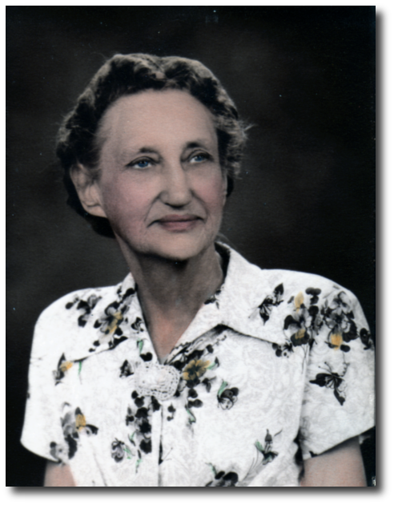
Birth: 7 January 1887
Death: 3 December 1967
Burial: Woodmere Cemetary, Detroit, Michigan.
Married: Grace Louise Sevenoaks
Children:
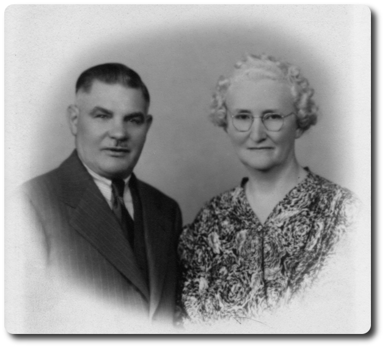
Birth: 3 November 1888
Death: 16 July 1955
Burial: Woodmere Cemetary, Detroit, Michigan.
Married: George Everett Raubolt
Children:
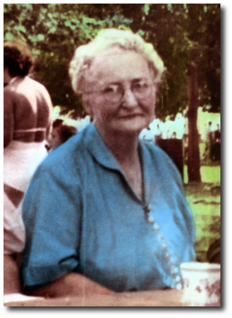
Birth: 2 May 1857
Death: 8 April 1931
Married: Belle Franklin
Children:
Birth: 6 June 1863
Death: 8 September 1942
Married: Frederick Alexa Raubolt
Children:
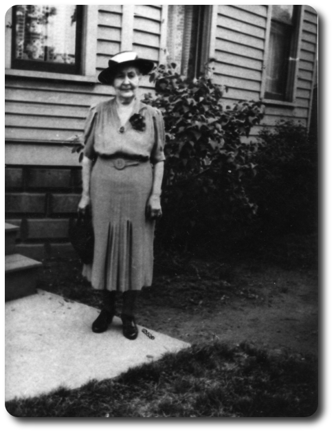
Birth: 5 February 1918
Death: 13 March 1993
Married: Genevieve Grace Raubolt on 6 July 1940.
Children:
Roger Frederick Kurth b. 2 March 1942
Janice Eileen Kurth b. 3o April 1945
Barbara Ann Kurth b. 26 May 1950
Neil Douglas Kurth b. 3 March 1957
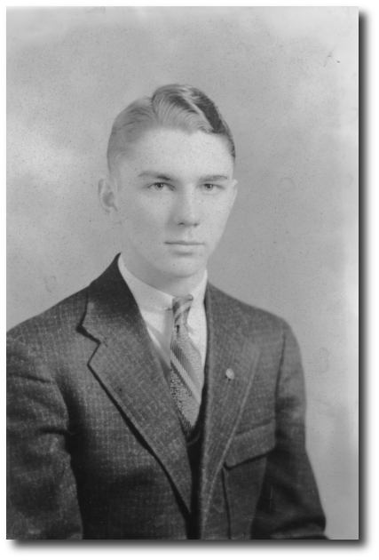
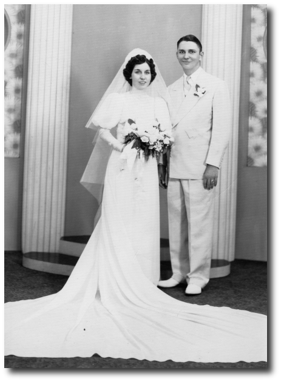
Birth: 6 September 1917
Death: 14 April 1995
Married: Douglas Kurth on 6 July 1940.
Children:
Roger Frederick Kurth b. 2 March 1942
Janice Eileen Kurth b. 3o April 1945
Barbara Ann Kurth b. 26 May 1950
Neil Douglas Kurth b. 3 March 1957
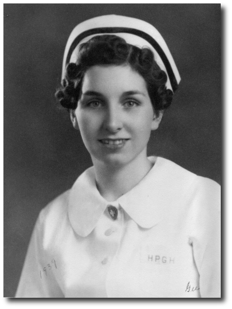
Birth: 5 Sep 2835 in Keesevill, Essex Co, New York, USA
Death: 11 Hune 1913 Wyandotte, Michigan, USA
Burial: Woodmere Cemetety, Detroit, Michigan, USA
Married:
Children:
Belle Franklin b. 1863
Eva Ann Franklin b. 1873
Edith May Franklin b. 1876
Etta B. Franklin b.1879
Birth: 21 October 1851, Michigan
Death: 7 Sep 1928, Detroit, Michigan
Burial: Woodmere Cemetery, Detroit, Michigan
Married: John Benjamin Fanklin
Children:
Birth:
Death:
Married:
Children: